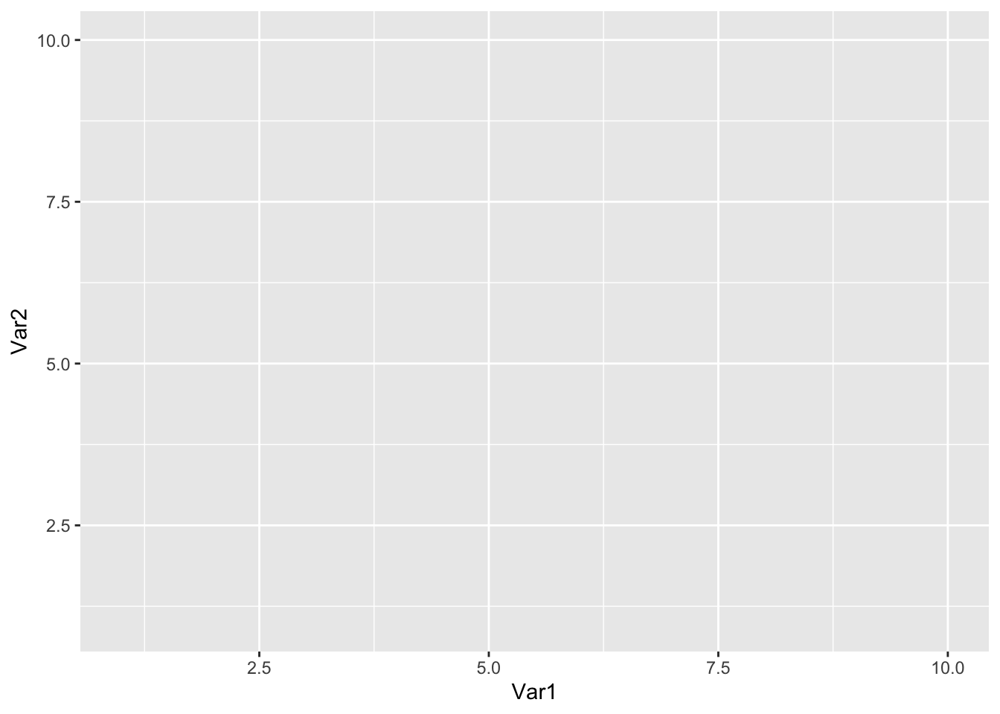
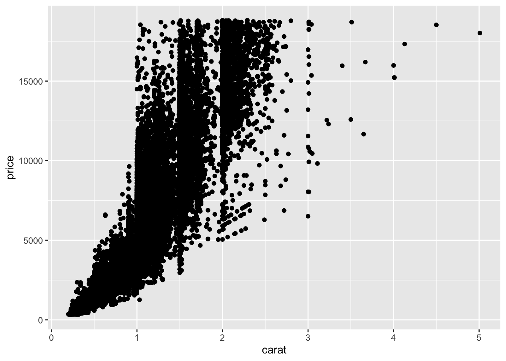
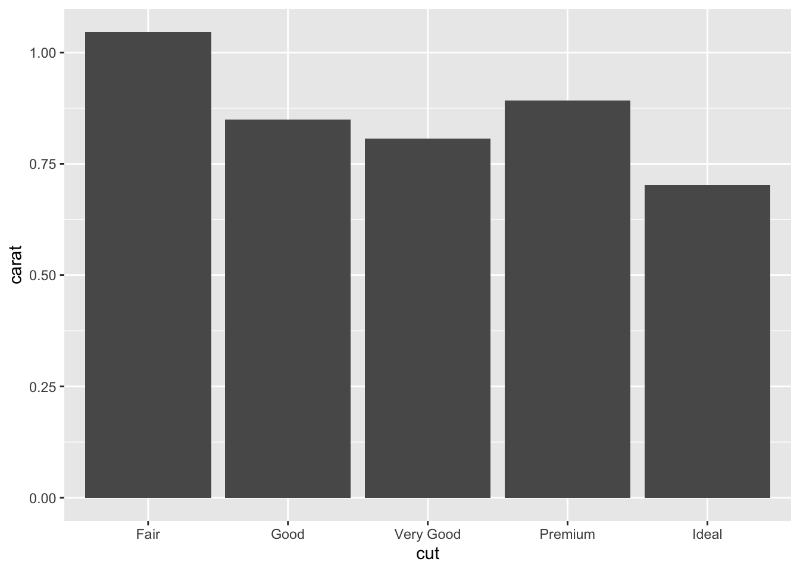
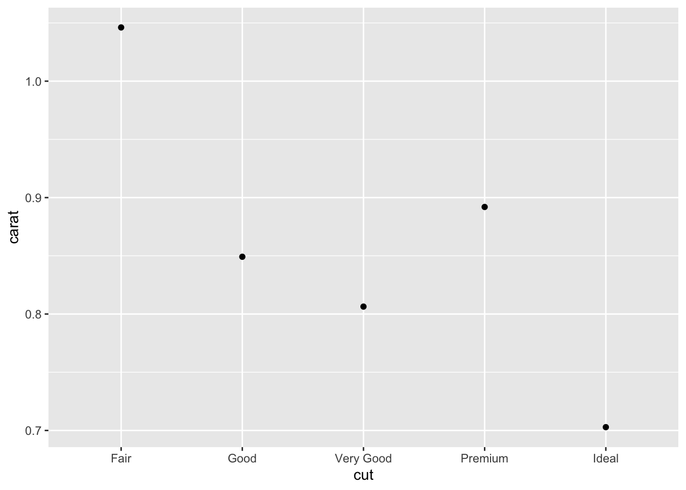
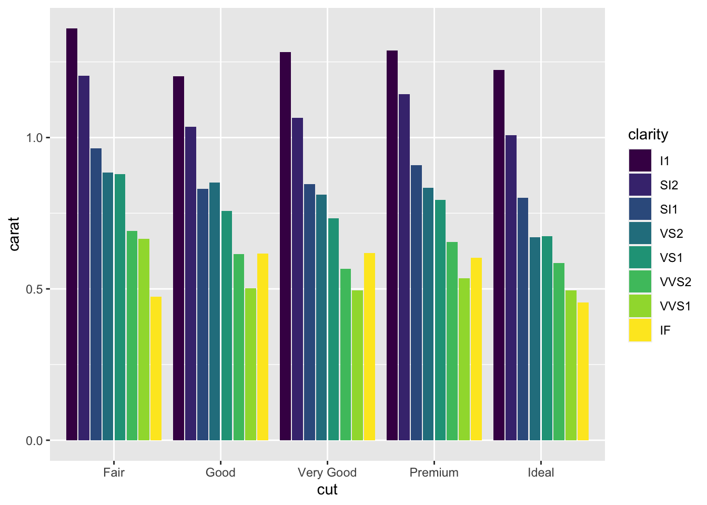
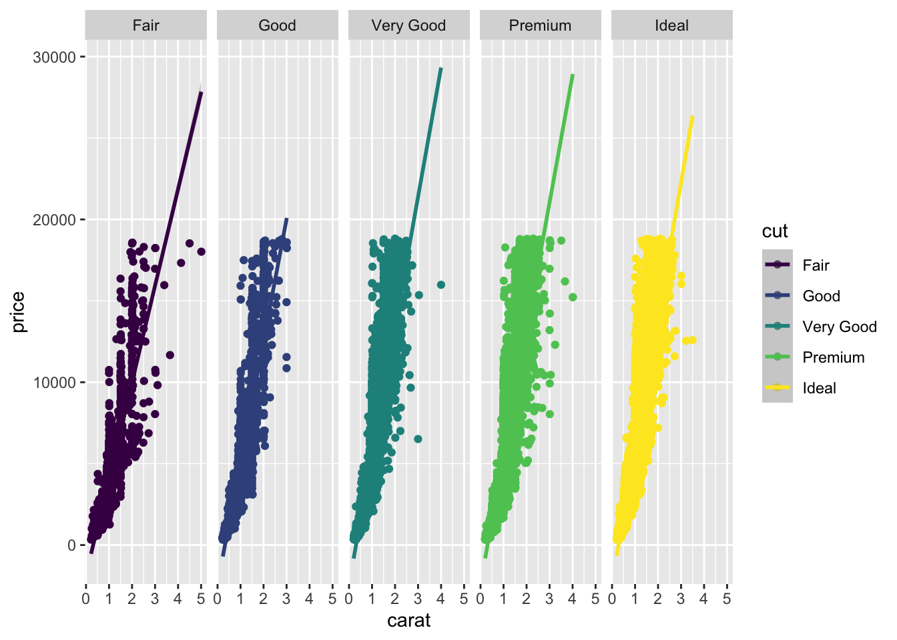
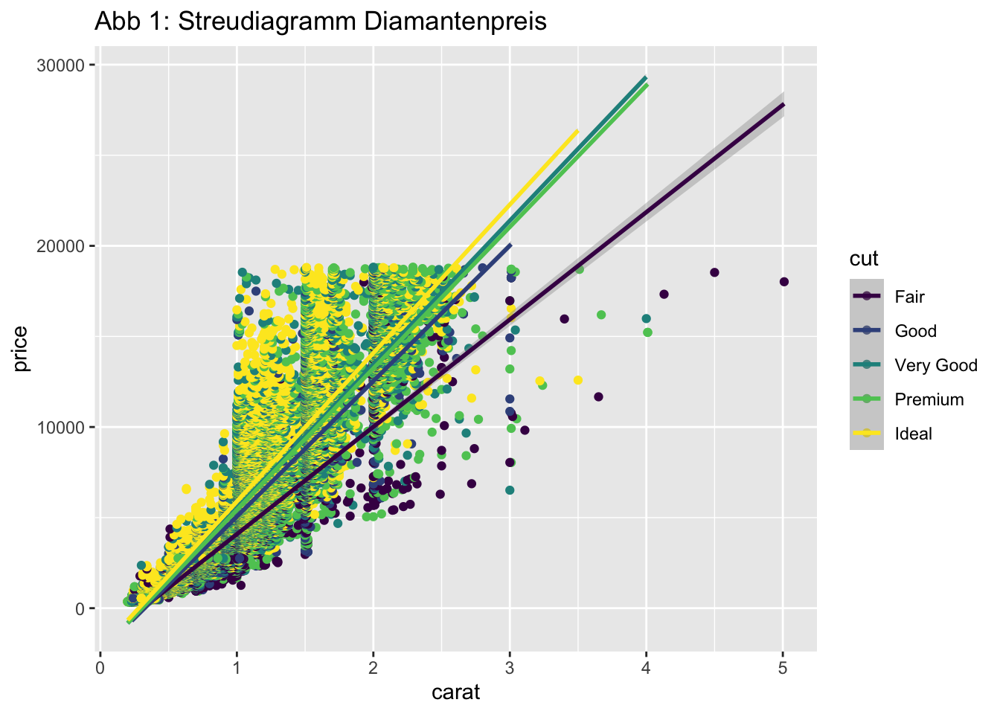
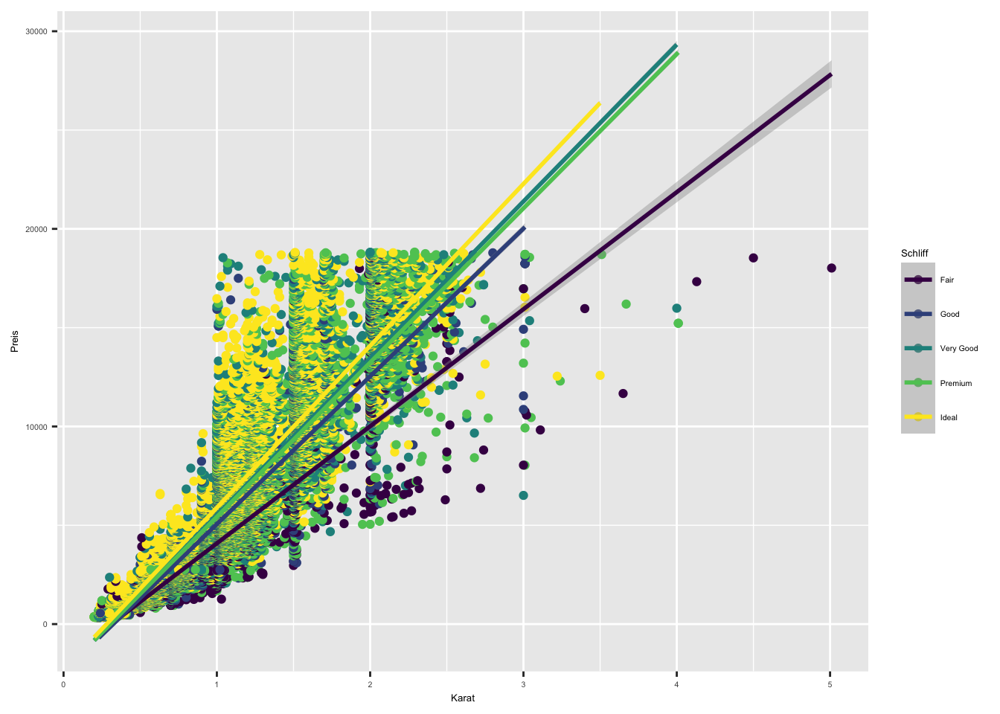
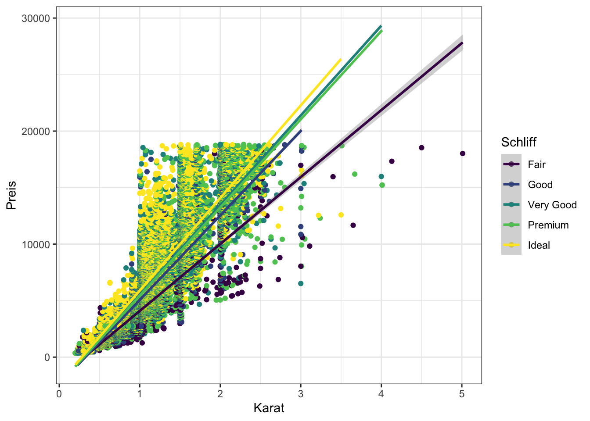
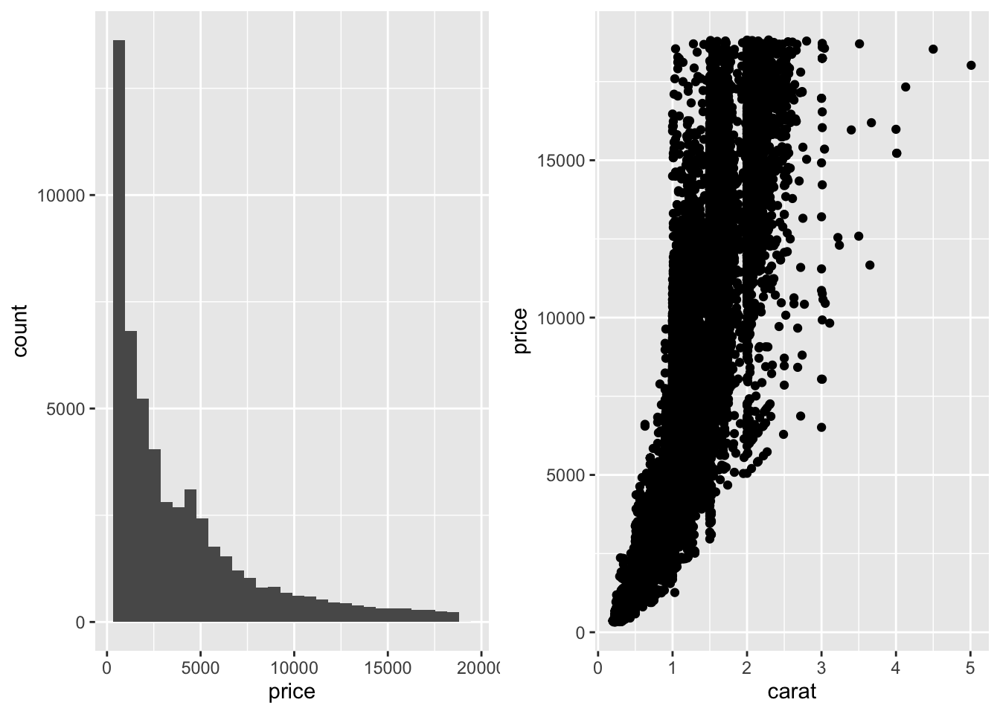

Kapitel 12 Graphiken
Die Datenvisualisierung ist einer der wichtigsten Schritte in der Statistik. Sie ist nicht nur Teil der Datenanalyse, eine gute Darstellung komplizierter Ergebnisse kann beinahe als Kunst betrachtet werden. Die Programmiersprache R stellt uns ein leistungsstarkes Visualisierungspaket zur Verfügung, ggplot2.
Dieses Kapitel soll zeigen, wie man mit ggplot2 bekannte statistische Diagramme erstellen kann und wie man sie verbessern oder anpassen kann.
12.1 Das ggplot2 Paket
ggplot2 ist ein Plot-System für R, das auf der “Grammatik” von Grafiken basiert. Es kümmert sich um viele der kniffligen Details, die das Plotten mühsam machen (wie z.B. das Zeichnen von Legenden) und bietet ein leistungsfähiges Grafikmodell, das es einfach macht, komplexe mehrschichtige Grafiken zu erstellen.
Warum ist ggplot2 gut?
Mit einem einzigen Befehl lassen sich hervorragende Themen erstellen.
Die Farben sind schöner und ansprechender als bei den üblichen Grafiken (und frei wählbar).
Es ist einfach, Daten mit mehreren Variablen zu visualisieren.
Bietet eine Plattform zur Erstellung einfacher Diagramme, die eine Fülle von Informationen liefern.
12.2 ggplot()-Funktion
Die von ggplot2 implizierte “Grammatik der Grafik”, beruht auf dem Prinzip, dass ein Plot in die folgenden grundlegenden Teile aufgeteilt werden kann:
\(Plot = data + aesthetics + geometry\)
data bezieht sich auf einen Datensatz (
data.frame).aesthetics bezeichnet die x- und y-Variablen. Sie wird auch verwendet, um R mitzuteilen, wie die Daten in einem Diagramm angezeigt werden, z. B. Farbe, Größe und Form der Punkte usw.
geometrie bezieht sich auf die Art der Grafik (Balkendiagramm, Histogramm, Boxplot, Liniendiagramm, Density-Plot, Streu-/Punktdiagramm usw.)
Wir werden zum Üben den Datensatz diamonds aus dem tidyverse Paket nutzen. Er behandelt den Preis und die Charakteristika von Edelsteinen, also ein schönes Thema für schöne Graphen. Bevor wir also loslegen, installieren Sie die Pakete ggplot2 und tidyverse und führen Sie aus:
library(ggplot2)
library(tidyverse)Der wichtigste (und grundlegenste) Befehl zum Erstellen von Graphiken mit ggplot2 ist ggplot().
Mit ggplot() sagen wir R, dass jetzt eine Graphik erstellt wird. Wir können es mit dem Aufstellen einer weißen Leinwand vergleichen, die wir nun füllen wollen.
Der Befehl ggplot() wird mit den ersten 2 Elementen der “Grammatik der Grafik” gefüllt, data und aesthetics, kurs aes(). Wir geben also an, wo unsere Daten herkommen und welche Variable auf die X-Achse und welche auf die Y-Achse gelegt werden soll. Dieses Vorgehen ist für jede Art von Graphen gleich.
df = data.frame(Var1 = 1:10,
Var2 = 1:10)ggplot(data = df, aes(x = Var1, y = Var2))
Das Ergebnis ist ein leerer Graph, mit der Variable Var1 auf der X-Achse und der Variable Var2 auf der Y-Achse.
12.3 Streu-/Punktdiagramm
Streudiagramme können Ihnen helfen, die Beziehung zwischen zwei Variablen zu erkennen. Ein Streudiagramm ist eine einfache Darstellung der Kovariation einer Variablen mit einer zweiten Variable.
Besonders gut funktioniert dies, wenn man 2 numerische Variablen gegeneinander plotted.
Im Datensatz diamonds gibt es beispielsweise die Variable price (Kosten des Steins) und die Karatzahl (Masse).
head(diamonds)## # A tibble: 6 × 10
## carat cut color clarity depth table price x y z
## <dbl> <ord> <ord> <ord> <dbl> <dbl> <int> <dbl> <dbl> <dbl>
## 1 0.23 Ideal E SI2 61.5 55 326 3.95 3.98 2.43
## 2 0.21 Premium E SI1 59.8 61 326 3.89 3.84 2.31
## 3 0.23 Good E VS1 56.9 65 327 4.05 4.07 2.31
## 4 0.29 Premium I VS2 62.4 58 334 4.2 4.23 2.63
## 5 0.31 Good J SI2 63.3 58 335 4.34 4.35 2.75
## 6 0.24 Very Good J VVS2 62.8 57 336 3.94 3.96 2.4812.3.1 Streudiagramm mit 2 Variablen
Stellen wir zunächst einmal unsere Grundfunktion auf:
ggplot(data = diamonds, aes(x = carat, y = price))Das Ergebnis ist ein leerer Graph, mit der Variable carat auf der X-Achse und der Variable price auf der Y-Achse. Wir könnten also betrachten, ob der Preis von Diamanten steigt, wenn die Karat (Masse) höher sind.
12.3.2 geom_point()
Nun fehlen uns nun noch die charakteristischen “Punkte”, die den Graph zum Streudiagramm machen. Jeder Punkt repräsentiert einen Stein mit einer Karatzahl und einem Preis.
Wir wollen also ein neues Element in unseren Graphen zeichnen,sozusagen eine weitere Schicht auftragen. Dies funktioniert in ggplot2 mit dem + Operator. Die Punkte sind eine Geometrie (das 3. Element unserer Grammatik). Geometrie wird i.d.R. mit geom geschrieben:
ggplot(data = diamonds, aes(x = carat, y = price)) +
geom_point()
Es scheint, als bestünde ein positiver Zusammenhang zwischen carat und price. Mit zunehmender Karatzahl werden Steine also tendenziell teurer.
12.3.3 geom_smooth()
Manchmal ist es praktisch in das “Chaos” der Punkte des Streudiagramms etwas Ordnung zu bringen und sich die Zusammenhänge noch einmal mit einer linearen Funktion zu visualisieren (Regressionsgerade). Dies lässt sich mit der Funktion geom_smooth() machen. Wir hängen sie also einfach mit einem weiteren + an unseren Graphen dran:
ggplot(data = diamonds, aes(x = carat, y = price)) +
geom_point() +
geom_smooth(method = "lm")Die Angabe method = "lm" macht die Linie zur Geraden, geben wir dieses Argument nicht an, bekommen wir eine sogenannte loess-Kurve, die jedoch schnell unübersichtlich wird:
ggplot(data = diamonds, aes(x = carat, y = price)) +
geom_point() +
geom_smooth()
12.3.4 Streudiagramm mit mehr als 2 Variablen
Ein weiteres wichtiges Merkmal eines Diamanten ist sein Schliff, im diamonds Datensatz heißt diese Variable cut. Sie wird in mehreren Kategorien gemessen:
table(diamonds$cut)##
## Fair Good Very Good Premium Ideal
## 1610 4906 12082 13791 21551Wollen wir diese 3. Variable auch in unserem Graphen darstellen, haben wir das Problem, dass wir neben X und Y keine weitere Achse haben. Oft behilft man sich in solchen Situationen durch die Hinzunahme einer weiteren aesthetics Kategorie, z.B. Farben (colour). Jede Schliffkategorie erhält also ihre eigene Farbe:
ggplot(data = diamonds, aes(x = carat, y = price, colour = cut)) +
geom_point() +
geom_smooth(method = "lm")
Es wären auch andere aesthetics zur Unterscheidung denkbar, z.B. die Form der Punkte (shape):
ggplot(data = diamonds, aes(x = carat, y = price, shape = cut)) +
geom_point()
12.4 Histogramm
Das Histogramm ist der wichtigste Graph zur Darstellung der Verteilung einer Variable. Er ist hinsichtlich der Komplexität sogar noch etwas leichter als das Streudiagramm, da nur 1 Variable enthalten ist.
Die darzustellende Variable liegt i.d.R. auf der X-Achse, während auf der Y-Achse die absolute oder relative Häufigkeit der Merkmalsausprägungen dargestellt wird.
Lassen Sie uns anhand der Variable price einmal ausprobieren ein Histogramm zu erstellen:
ggplot(data = diamonds, aes(x = price)) +
geom_histogram()## `stat_bin()` using `bins = 30`. Pick better value with `binwidth`.
Wie wir sehen, kommen günstigere Diamanten häufiger vor als teure. In diesem Fall haben wir also nicht die beliebte normalverteilte Form der Verteilung, sondern eine rechtsschiefte Form.
R gibt uns die Warnmeldung “Pick better value with binwidth”. Dies ist ein Hinweis, dass die Standardanzahl von 30 Balken für die hohe Auflösung der Variable price nicht ausreicht. Es wird uns eine Auflösung von binwidth = 39 vorgeschlagen:
ggplot(data = diamonds, aes(x = price)) +
geom_histogram(binwidth = 39)
12.5 Balkendiagramm
Das Balkendiagramm ist eine Möglichkeit, die Höhe einer Deskriptivstatistik (aka summary statistics) mit der Höhe eines Balkens zu visualisieren. Es wird z.B. eingesetzt, um Gruppenunterschiede, bzw. Unterschiede zwischen den Kategorien einer Variable darzustellen.
Probieren wir es doch gleich einmal mit der Variable cut (Schliff eines Diamanten) aus, die wir oben bereits kennengelernt haben. Wir wollen die durchschnittlichen Karat (Gewicht) der Steine für jede Kategorie von cut darstellen. Die höhe der Balken muss also jeweils den Mittelwert repräsentieren.
Da wir nun keinen Wert visualisieren wollen der “direkt” als Zahl im Datensatz steht, sondern für die Berechnung des Mittelwerts eigentlich ein weiterer Rechenschritt erfolgen muss, benutzen wir die stat_summary Funktion:
ggplot(data = diamonds, aes(x = cut, y = carat)) +
stat_summary(geom = "bar", fun = mean) 
Selbiges funktioniert natürlich auch mit jeder anderen Deskriptivstatistik, z.B. dem Median
ggplot(data = diamonds, aes(x = cut, y = carat)) +
stat_summary(geom = "bar", fun = median) Oder theoretisch auch mit anderen geoms
ggplot(data = diamonds, aes(x = cut, y = carat)) +
stat_summary(geom = "point", fun = mean) 
Häufig möchte man zusätzlich eine Art von Streuung/Unschärfe darstellen, wenn Mittelwerte dargestellt werden. Eine beliebte Variante ist es, das 95% Konfidenzintervall um den Mittelwert mit sogenannten Fehlerbalken (error bars) zu visualisieren. Vorher installieren und laden wir noch das Paket Hmisc, welches uns die Berechnung der Fehlerbalken ermöglicht:
library(Hmisc)## Warning: package 'Hmisc' was built under R version 3.6.2## Loading required package: lattice## Warning: package 'lattice' was built under R version 3.6.2## Loading required package: survival## Warning: package 'survival' was built under R version 3.6.2## Loading required package: Formula## Warning: package 'Formula' was built under R version 3.6.2##
## Attaching package: 'Hmisc'## The following object is masked from 'package:psych':
##
## describe## The following objects are masked from 'package:dplyr':
##
## src, summarize## The following objects are masked from 'package:base':
##
## format.pval, unitsggplot(data = diamonds, aes(x = cut, y = carat)) +
stat_summary(fun.data = mean_cl_normal, geom = "errorbar") +
stat_summary(geom = "point", fun = mean) 12.6 Balkendiagramm mit mehr als 3 Variablen
Genau wie beim Streudiagramm lässt sich das Balkendiagramm auch für mehr als 2 Variablen darstellen. Statt Farben oder Punktfarben ist die einfachste Art Balken zu differenzieren mit der fill Ästhetik:
ggplot(data = diamonds, aes(x = cut, y = carat, fill = clarity)) +
stat_summary(geom = "bar", fun = mean, position = position_dodge2(.95))
Das Argument position_dodge2() sorgt dafür, dass die Balken nebeneinander positioniert sind und nicht voreinander. Probieren Sie den Code gerne auch einmal ohne position_dodge2() aus.
12.7 Boxplot
Ähnlich wie das Balkendiagramm, lassen sich Gruppenunterschiede gut mit einem Boxplot darstellen. Dieses zeigt standardmäßig den Median (Mittelbalken), sowie die Streuung der Daten mittels der Box (Quartilabstand, IQR) und die sogenannten Whiskers (1.5 * Quartilabstand). Punkte außerhalb der Whiskers werden als Ausreißer mit einem Punkt gekennzeichnet.
ggplot(data = diamonds, aes(x = cut, y = carat)) +
geom_boxplot()
12.8 Facetting
Wir sehen uns noch einmal unser 3-farbiges Streudiagramm von zuvor an:
ggplot(data = diamonds, aes(x = carat, y = price, colour = cut)) +
geom_point() +
geom_smooth(method = "lm")Es ist sichtbar, dass die Darstellung vieler Kategorien mittels weiterer aesthetics, wie Farben, Füllungen, Punktarten, etc. schnell unübersichtlich wird.
Oft ist es nützlich, durch die Darstellung einzelner Gruppen in Teilgraphen (Facetten) etwas mehr Klarheit in die Darstellung zu bringen. Der Befehl dafür ist facet_grid():
ggplot(data = diamonds, aes(x = carat, y = price, colour = cut)) +
geom_point() +
geom_smooth(method = "lm") +
facet_grid(cols = vars(cut))
Es ist auch eine reihenweise Darstellung möglich
ggplot(data = diamonds, aes(x = carat, y = price, colour = cut)) +
geom_point() +
geom_smooth(method = "lm") +
facet_grid(rows = vars(cut))
12.9 Ästhetische Anpassungen
Zum Gewinnen eines schnellen Überblicks kommen wir mit den vorgestellten Darstellungsoptionen schon recht weit. Für eine Publikation oder das Verwenden der Graphik in einer Abschlussarbeit wollen wir jedoch ggf. noch einige Dinge anpassen
12.9.1 ggtitle()
Um unserer Graphik einen Titel zu geben, nutzen wir den Befehl ggtitle(). Vorsicht: Wie jede Zeichenkette schreiben wir auch hier den Namen in Anführungszeichen:
ggplot(data = diamonds, aes(x = carat, y = price, colour = cut)) +
geom_point() +
geom_smooth(method = "lm") +
ggtitle("Abb 1: Streudiagramm Diamantenpreis")
12.9.2 labs()
ggplot2 benutzt zur Beschriftung von X- und Y-Achse sowie als Titel der Legende automatisch die im data.frame enthaltenen Variablennamen
names(diamonds)## [1] "carat" "cut" "color" "clarity" "depth" "table" "price"
## [8] "x" "y" "z"Wollen wir dort eine schönere Beschriftung verwenden, nutzen den Befehl labs(). Die Y-Achse wollen wir nun auf deutsch “Preis” nennen, die X-Achse “Karat” und die Legende soll den Titel “Schliff” haben:
ggplot(data = diamonds, aes(x = carat, y = price, colour = cut)) +
geom_point() +
geom_smooth(method = "lm") +
labs(x = "Karat", y = "Preis", colour = "Schliff")12.9.3 Achsen verändern
Auch die Einheiten, mit denen die Achsen beschriftet werden (axis ticks) werden von R automatisch und gleichmäßig gewählt. Die Beschriftung kann auch manuell gesteuert werden. Der Befehl lautet scale_x_continuous(), bzw. scale_y_continuous() für kontinuierliche (numerische) X- und Y-Achsen. Für kategoriale X- und Y-Achsen (Namen/Kategorien) lautet der Befehl scale_x_discrete(), bzw. scale_y_discrete ().
Wir wollen zum Üben in dem vorangegangenen Graphen auf der X-Achse (Karat) manuell nur die Werte 0, 2 und 4 zulassen. Dies erfolgt über breaks = c():
ggplot(data = diamonds, aes(x = carat, y = price, colour = cut)) +
geom_point() +
geom_smooth(method = "lm") +
labs(x = "Karat", y = "Preis", colour = "Schliff") +
scale_x_continuous(breaks = c(0, 2, 4))Automatisch werden an den angegebenen Positionen der kontinuierlichen X-Achse die Zahlen eingetragen, also 0, 2 und 4. Wir könnten diese aber auch mit labels versehen:
ggplot(data = diamonds, aes(x = carat, y = price, colour = cut)) +
geom_point() +
geom_smooth(method = "lm") +
labs(x = "Karat", y = "Preis", colour = "Schliff") +
scale_x_continuous(breaks = c(0, 2, 4), labels = c("Null", "Zwei", "Vier"))12.10 theme()
Der Befehl theme() ist einer der mächtigsten in ggplot2, denn er verändert das Aussehen des gesamten Graphen.
Er hat so viele Anpassungsmöglichkeiten, dass wir sie an dieser Stelle unmöglich auflisten könnten. Glücklicherweise ist eine Liste aller Optionen unter ?theme() hinterlegt.
12.10.1 Elemente von theme()
Sehen wir uns dennoch einmal ein Beispiel an. Wie wäre es, wenn wir den gesamten Text in unserem Graphen etwas kleiner machen? Das geht so:
ggplot(data = diamonds, aes(x = carat, y = price, colour = cut)) +
geom_point() +
geom_smooth(method = "lm") +
labs(x = "Karat", y = "Preis", colour = "Schliff") +
theme(text = element_text(size = 5))
Wir können auf diese Art auch Elemente (Achsen, Beschriftungen…) aus unserem Graphen löschen. Dafür wählt man die Option element_blank(). Lassen wir zum Beispiel einmal die kleinen Striche, die die Einheiten an den Achsen anzeigen verschwinden:
ggplot(data = diamonds, aes(x = carat, y = price, colour = cut)) +
geom_point() +
geom_smooth(method = "lm") +
labs(x = "Karat", y = "Preis", colour = "Schliff") +
theme(axis.ticks = element_blank())
12.10.2 Legende
Auch die Legende des Graphen lässt sich über theme() steuern. Dazu nutzen wir das Argument legend.position.
Die Optionen sind “right” (das ist der Standard), “left”, “top”, “bottom”. Lassen Sie uns die Legende einmal unter den Graphen verschieben:
ggplot(data = diamonds, aes(x = carat, y = price, colour = cut)) +
geom_point() +
geom_smooth(method = "lm") +
labs(x = "Karat", y = "Preis", colour = "Schliff") +
theme(legend.position = "bottom")12.10.3 Vorgefertigte themes
Wenn wir nicht alle optischen Elemente des Graphen einzeln anpassen möchten, aber ihn doch etwas individueller aussehen lassen wollen, können wir eines der vorgefertigten Themen nutzen.
Hier einige häufig gewählte Beispiele:
ggplot(data = diamonds, aes(x = carat, y = price, colour = cut)) +
geom_point() +
geom_smooth(method = "lm") +
labs(x = "Karat", y = "Preis", colour = "Schliff") +
theme_bw()
ggplot(data = diamonds, aes(x = carat, y = price, colour = cut)) +
geom_point() +
geom_smooth(method = "lm") +
labs(x = "Karat", y = "Preis", colour = "Schliff") +
theme_classic()
ggplot(data = diamonds, aes(x = carat, y = price, colour = cut)) +
geom_point() +
geom_smooth(method = "lm") +
labs(x = "Karat", y = "Preis", colour = "Schliff") +
theme_dark()
Es gibt R-Pakete, die hunderte weitere Optionen bereitstellen, so zum Beispiel das Paket ggthemes. Installieren Sie es einfach mittels install.packages() und testen Sie es aus.
12.11 Abbildungen kombinieren
Gerade bei komplexeren Fragestellungen oder Studien mit mehreren abhängigen Variablen (AVs) kommt es vor, dass die Anzahl der Graphen etwas zu groß wird.
Dann kann es helfen, mehrere Graphen zu einem kombinierte Graph zusammenzusetzen. Die Funktion dafür heißt ggarrange() und kommt aus dem R-Paket ggpubr.
Also installieren Sie kurz das Paket ggpubr, laden es mittels library() und dann geht es gleich weiter:
# install.packages("ggpubr")
library(ggpubr)Damit es sich auch lohnt, nehmen wir uns gleich einmal 4 Graphen vor. Nehmen wir doch einen von jeder Art. Damit es nicht zu unübersichtlich wird, benennen wir die 4 Graphen mit a, b, c und d:
a = ggplot(data = diamonds, aes(x = price)) +
geom_histogram()
b = ggplot(data = diamonds, aes(x = carat, y = price)) +
geom_point()
c = ggplot(data = diamonds, aes(x = color, y = carat)) +
stat_summary(geom = "bar", fun = mean)
d = ggplot(data = diamonds, aes(x = price)) +
geom_boxplot()Diese 4 Objekte a, b, c und d setzen wir dann einfach in ggarrange() ein. Es macht Sinn den Graphen auch ein Label zu geben, dann kann man in der Fußnote der Abbildung darauf verweise, was in welchem Graphen zu sehen ist (z.B. “In Graphik A sieht man ein Histogramm von…”):
ggarrange(a, b, c, d, labels = c("A", "B", "C", "D"))Wir können auch steuern, wie das Gitter der Graphen zusammengesetzt sein soll, zum Beispiel untereinander…
ggarrange(a, b, nrow = 2)… oder nebeneinander:
ggarrange(a, b, ncol = 2)
12.12 Abbildungen exportieren
Der Export der Graphen meint im Prinzip folgendes: Speichere mir den Graphen in mein Arbeitsverzeichnis und das in einem gängigen Bildformat (.pdf, .png, .jpg, .tif…).
Das Vorgehen funktioniert für alle Formate gleich:
Wenn noch nicht geschehen, mit
setwd()das gewünschte Arbeitsverzeichnnis setzenMittels Befehl angeben, welche Art von Export gewünscht ist, z.B.
png()Den Code für den
ggplot()Graphen ausführenMit dem Befehl
dev.off()anzeigen, dass der Code für den Graphen fertig ist, die Datei also geschrieben werden soll.
Größe (in cm) und Auflösung (in dpi) lassen sich direkt innerhalb des Befehls steuern.
Ein Beispiel:
png(file = "Figure1.png", width = 5, height = 5, units = "in", res = 300)
ggplot(data = diamonds, aes(x = price, colour = cut)) +
geom_histogram(binwidth = 39)
dev.off()## quartz_off_screen
## 2Das Argument file gibt den Zielnamen der .png Datei an. Die Argumente width und height die Dimensionen (hier quadratisch \(\rightarrow\) für rechteckig einfach eine der beiden vergrößern/verkleinern). Die Auflösung von 300 dpi ist sehr gebräuchlich und muss nur selten verändert werden.
Ausführen des Befehls speichert Ihnen die Datei Figure1.png in das Arbeitsverzeichnnis. Schauen Sie gleich einmal nach!